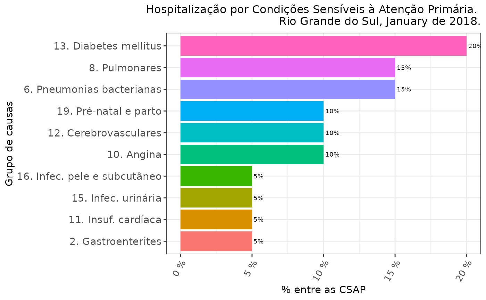
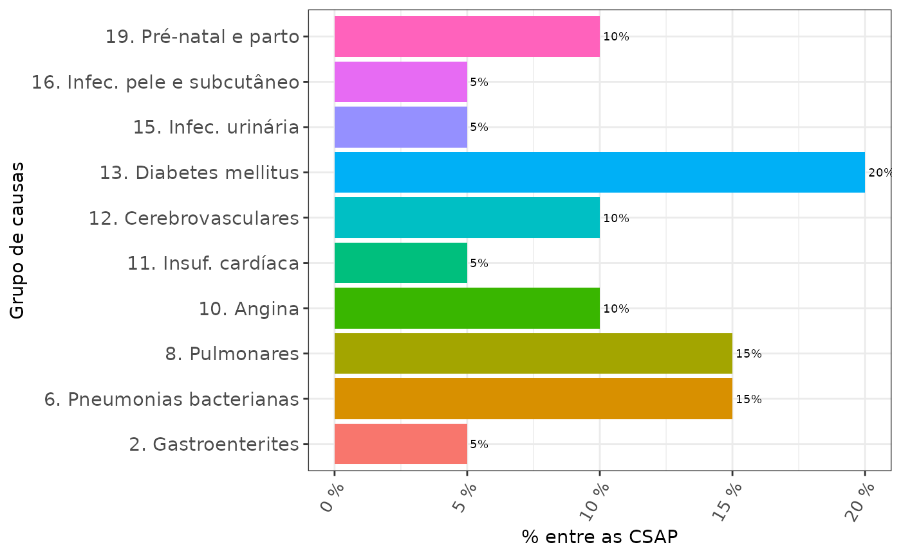
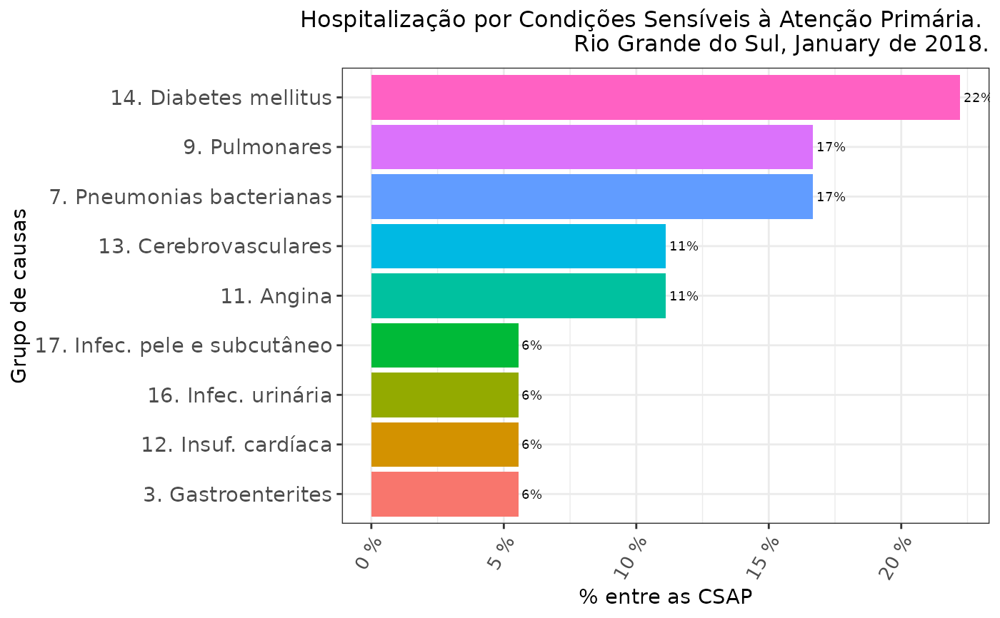
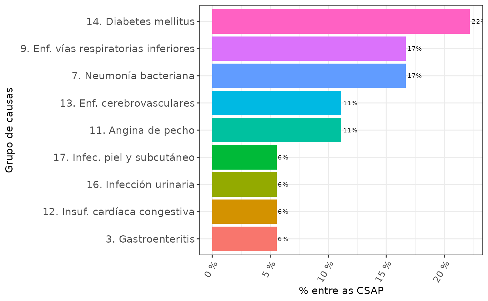
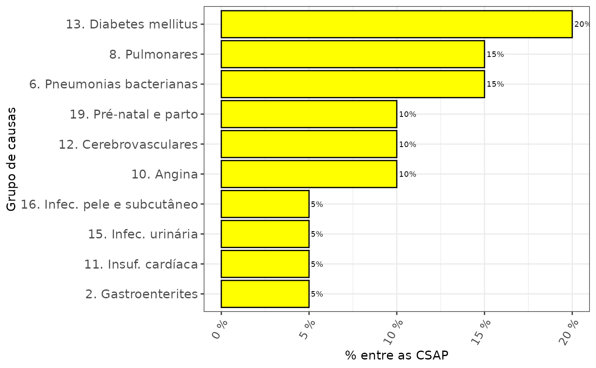
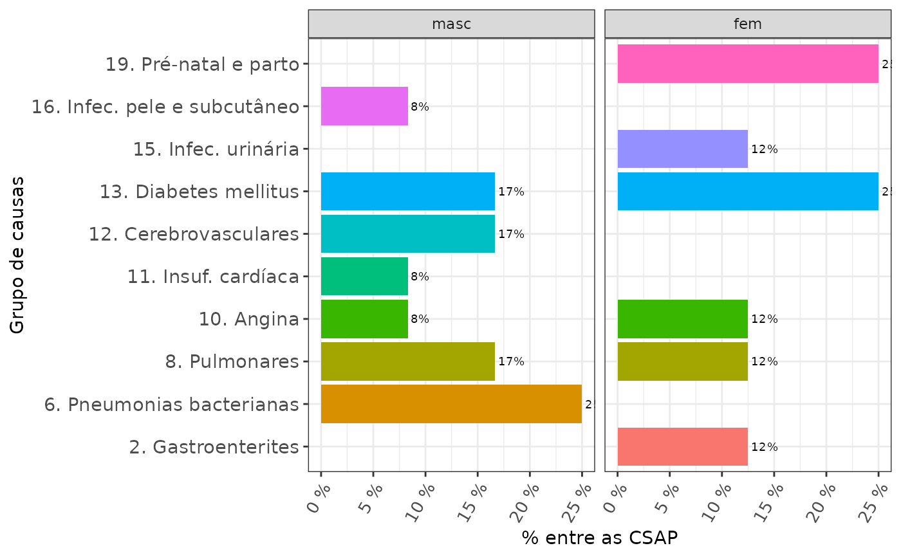
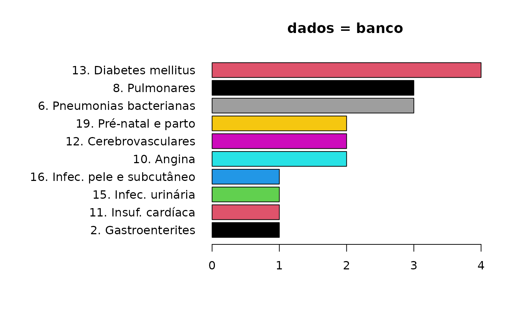
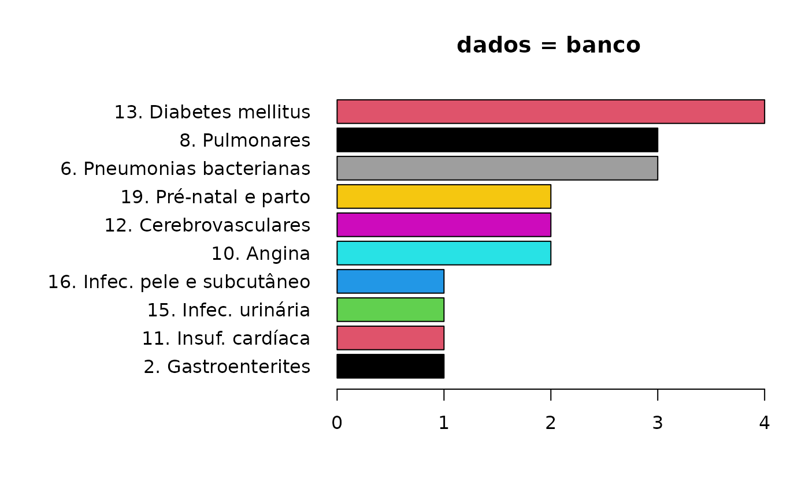

Desenha um gráfico de barras das CSAP por grupo de causa segundo a Lista Brasileira de Internações por Condições Sensíveis à Atenção Primária. Permite a lista oficial publicada em Portaria Ministerial, com 19 grupos de causa, ou a lista com 20 grupos, publicada por Alfradique et al.
Usage
desenhaCSAP(
dados,
lista = "MS",
lang = "pt.ca",
jaetabela = FALSE,
tipo.graf = "ggplot",
valores = "porcento",
ordenar = TRUE,
colorir = TRUE,
porcentagens = TRUE,
val.dig = 0,
titulo = NULL,
onde,
quando = NULL,
t.hjust = 1,
t.size = 12,
x.size = 10,
y.size = 11,
val.size = 2.5,
limsup = NULL,
...
)Arguments
- dados
O objeto com as informações a serem desenhadas. Pode ser: (ver
descreveCSAP)Um
data.framegerado pela funçãocsapAIH, ou qualquerdata.framecom uma variável chamadagrupocom os grupos de causa da Lista Brasileira de CSAP, rotulados na mesma forma que os resultantes da funçãocsapAIH, isto é, "g01", "g02", ..., "g19".Um objeto da classe
factor) oucharactercom os grupos de causa CSAP, em ordem crescente de 1 a 19, conforme os grupos da Portaria do MS. nomeados de acordo com o resultado da funçãocsapAIH. Esse vetor não precisa ser gerado pela funçãocsapAIH, mas os grupos também devem ser rotulados da mesma forma que na função, isto é, "g01", "g02", ..., "g19".
- lista
Lista de causas a ser considerada (v. detalhes); pode ser
"MS"(padrão) para a lista publicada em portaria pelo Ministério da Saúde do Brasil ou "Alfradique" para a lista publicada no artigo de Alfradique et al.- lang
idioma em que se apresentam os nomes dos grupos; pode ser: "pt.ca" (default) para nomes em português com acentos; "pt.sa" para nomes em português sem acentos; "en" para nomes em inglês; ou "es" para nomes em castelhano.
- jaetabela
Argumento lógico, cujo padrão é FALSE. TRUE indica que os dados são uma tabela pronta, que deve apenas ser graficada. A tabela pode ser um objeto de qualquer classe representando uma tabela com pelo menos duas colunas, sendo a primeira com uma identificação (não necessariamente o nome) do grupo CSAP conforme a Lista Brasileira e a segunda com o número de casos observado em cada grupo.
- tipo.graf
"ggplot" (padrão) cria um gráfico com
ggplot2; quando definido como "base", ou quandoggplot2não está instalado, desenha um gráfico com as funções básicas.- valores
Argumento utilizado nos gráficos com
ggplot2; "porcento" (padrão) desenha as barras em porcentagem, "contagem" as desenha em frequência absoluta. Veja em 'detalhes'.- ordenar
Argumento lógico. Se
TRUE(padrão), as barras do gráfico serão ordenadas de maior a menor frequência de casos.- colorir
Argumento lógico ou para colorir as barras segundo demanda.
TRUE(padrão), colore as barras com a paletarainbow;FALSE, mantém comoNULLos argumentos para a cor das barras nas funções de origem do gráfico, isto ébarplot(..., col = NULL, ...)egeom_bar(fill = NULL), colorindo as barras debarplotem cinza e deggplotem preto;"cinza"colore as barras em quatro tons de cinza de escuro a claro: os cinco grupos mais frequentes, os cinco seguintes, ..., os quatro últimosAceita um vetor (de comprimento igual ao nº de grupos de causa CSAP (o nº de
levelsna variávelgrupos)) com os nomes ou códigos de cores.
- porcentagens
Argumento lógico, válido apenas para gráficos com ggplot. Se
TRUE(padrão), as barras terão escritas sobre elas a porcentagem do grupo de causa sobre o total de internações (ou o total de internações no estrato, em gráficos comfacet_gridoufacet_wrap).- val.dig
Nº de decimais nos valores das barras; padrão é 0.
- titulo
Título do gráfico; se NULL (default), não é gerado um título; se
"auto", o argumentoondepassa a ser obrigatório e a função gera um título para o gráfico a partir da informação deondee do arquivo de dados ou do informado para o argumentoquando. Se o argumentodadosfor umfactoroucharacter, o argumentoquandoé obrigatório.- onde
Local, população de origem dos dados do gráfico; obrigatório se
titulo = "auto".- quando
Período de referência dos dados; se a fonte de dados for um "arquivo da AIH" (RD??????.dbc), é automaticamente extraído do arquivo.
- t.hjust
Valor para definição de ajuste horizontal do título, válido apenas para gráficos com ggplot. Default é 1.
- t.size
Valor para definição do tamanho de letra do título, válido apenas para gráficos com ggplot. Default é 12.
- x.size
Tamanho da letra do eixo x, válido apenas para gráficos com ggplot. Default é 10.
- y.size
Tamanho da letra do eixo y, válido apenas para gráficos com ggplot. Default é 12.
- val.size
Tamanho da letra dos valores das barras. Padrão é 2.5.
- limsup
Valor para ajuste do espaçamento do eixo de frequências, válido apenas para gráficos com ggplot. Quando o eixo representa porcentagens, deve ser expresso em proporção.
- ...
Value
Na opção padrão e com ggplot2 instalado, devolve um objeto das classes "gg" e "ggplot", com o gráfico.
Details
Por padrão, o gráfico é desenhado com ggplot2. Portanto, segue essa filosofia e permite a adição de outros comandos ao objeto devolvido. O vetor grupos não precisa ser gerado com a função csapAIH, mas deve usar os mesmos caracteres de identificação dos grupos CSAP que o resultado da função, v.g. "g01", "g02", ..., "g19".
Examples
library(csapAIH)
df <- csapAIH(aih100) # Computar as CSAP, lista MS
#> Importados 100 registros.
#> Excluídos 15 (15%) registros de procedimentos obstétricos.
#> Excluídos 1 (1%) registros de AIH de longa permanência.
#> Exportados 84 (84%) registros.
# Gráficos com ggplot
# =====================
# Cria o gráfico a partir do banco,
# uma vez que a variável com os grupos se chama "grupo":
# ----------------------------------------------------------
# Com titulo "automatico":
desenhaCSAP(df, titulo = "auto", onde = "Rio Grande do Sul")

# Sem titulo e sem ordenacacao por frequencia:
desenhaCSAP(df, ordenar = FALSE)

#
# Com a lista de Alfradique et al.:
desenhaCSAP(csapAIH(aih100, "Alfradique"),
lista = "Alfradique",
titulo = "auto",
onde = "Rio Grande do Sul")
#> Importados 100 registros.
#> Excluídos 15 (15%) registros de procedimentos obstétricos.
#> Excluídos 1 (1%) registros de AIH de longa permanência.
#> Exportados 84 (84%) registros.

desenhaCSAP(csapAIH(aih100, "Alfradique"), lista = "Alfradique", lang = "es")
#> Importados 100 registros.
#> Excluídos 15 (15%) registros de procedimentos obstétricos.
#> Excluídos 1 (1%) registros de AIH de longa permanência.
#> Exportados 84 (84%) registros.

# Cores
#-------
# Sem cores nas barras
desenhaCSAP(df, colorir = FALSE)
# Com as barras em tons de cinza
desenhaCSAP(df, colorir = "cinza")
# Com as barras em outra cor
desenhaCSAP(df, colorir = "yellow")

#
# Usando o banco todo pode-se tirar proveito de facilidades do ggplot2,
# como a reprodução do gráfico por estratos de outras variáveis, como no
# exemplo abaixo com o sexo. Para isso temos de descolorir o gráfico, que
# pode ser novamente colorido mais tarde. Como a ordenação dos grupos de
# causa continua sendo feita pela frequência da distribuição global, aqui
# ela faz menos sentido.
desenhaCSAP(df, ordenar = FALSE) +
ggplot2::facet_wrap(~sexo)

# Cria o gráfico a partir de uma variável:
# ---------------------------------------
fator <- df$grupo
desenhaCSAP(fator)
 carater <- as.character(fator)
desenhaCSAP(carater, limsup = 4.4)
# Se \code{titulo = "auto"}, o argumento \code{quando} é obrigatório:
if (FALSE) { # \dontrun{
desenhaCSAP(carater, titulo = "auto", onde = 'RS') # resulta em erro
} # }
desenhaCSAP(carater, titulo = "auto", onde = "RS", quando = "jan/2012")
carater <- as.character(fator)
desenhaCSAP(carater, limsup = 4.4)
# Se \code{titulo = "auto"}, o argumento \code{quando} é obrigatório:
if (FALSE) { # \dontrun{
desenhaCSAP(carater, titulo = "auto", onde = 'RS') # resulta em erro
} # }
desenhaCSAP(carater, titulo = "auto", onde = "RS", quando = "jan/2012")
 desenhaCSAP(carater, titulo = "Título manual")
desenhaCSAP(carater, titulo = "Título manual")
 # Cria o gráfico a partir de uma tabela com a primeira coluna contendo
# os 19 grupos de causa e a segunda coluna contendo o número de casos:
# --------------------------------------------------------------------
tabela <- descreveCSAP(df)
desenhaCSAP(tabela, jaetabela = TRUE)
if (FALSE) { # \dontrun{
# Resulta em erro, faltou o argumento 'quando'
desenhaCSAP(tabela, jaetabela = TRUE, titulo = "auto", onde = 'RS')
} # }
desenhaCSAP(tabela, jaetabela = TRUE,
titulo = "auto", onde = "RS", quando = "jan/2012")
desenhaCSAP(tabela, jaetabela = TRUE, titulo = "Título manual")
# Gráficos com as funções básicas
# =================================
desenhaCSAP(df, tipo.graf = "base", titulo = "dados = banco")

desenhaCSAP(df$grupo, tipo.graf = "base", titulo = "dados = fator")
desenhaCSAP(tabela, jaetabela = TRUE, tipo.graf = "base", titulo = "dados = tabela")
# Cria o gráfico a partir de uma tabela com a primeira coluna contendo
# os 19 grupos de causa e a segunda coluna contendo o número de casos:
# --------------------------------------------------------------------
tabela <- descreveCSAP(df)
desenhaCSAP(tabela, jaetabela = TRUE)
if (FALSE) { # \dontrun{
# Resulta em erro, faltou o argumento 'quando'
desenhaCSAP(tabela, jaetabela = TRUE, titulo = "auto", onde = 'RS')
} # }
desenhaCSAP(tabela, jaetabela = TRUE,
titulo = "auto", onde = "RS", quando = "jan/2012")
desenhaCSAP(tabela, jaetabela = TRUE, titulo = "Título manual")
# Gráficos com as funções básicas
# =================================
desenhaCSAP(df, tipo.graf = "base", titulo = "dados = banco")

desenhaCSAP(df$grupo, tipo.graf = "base", titulo = "dados = fator")
desenhaCSAP(tabela, jaetabela = TRUE, tipo.graf = "base", titulo = "dados = tabela")